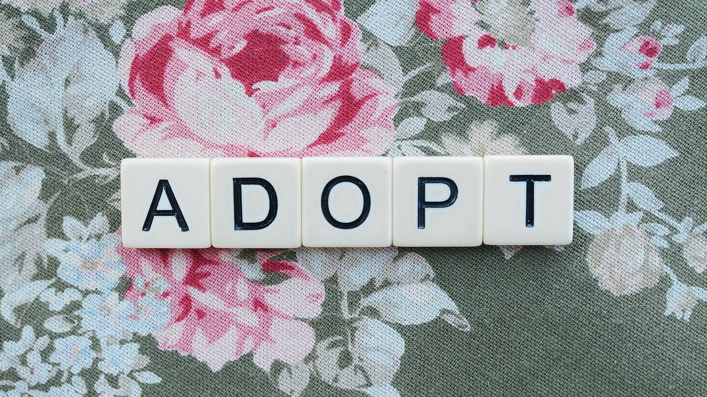

Why Adoption?
There are not enough homes for all the animals that are born every year. Adopting from a shelter helps weaken the pet overpopulation cycle. Each year 8 to 12 million dogs, cats, puppies and kittens are euthanized because there are simply not enough homes for them.
Viewing Hours
The center is open for visitors to view animals onsite during these hours:
Weekdays: 3–6 p.m.
Weekends: 1–4 p.m.
Closed Tuesdays and Holidays
Adoption Hours
Adoption appointments are available during these hours:
Weekdays: Noon–5 p.m.
Weekends: 10 a.m.–3 p.m.
Closed Tuesdays and Holidays
Adoption Process
-
The adopter must be at least 18 years old.
-
Call the center during Adoption Hours at 949-111-1111 to start the adoption process.
-
Staff will email you a Pre-Adoption Survey. This survey helps our staff learn more about you and your household, so we can help you find a good fit for your family.
-
Surveys are due back during Adoption Hours. When we receive your completed survey, staff will contact you to review your survey and discuss potential suitable animal(s).
-
If a potential match is made during the adoption counseling call, an in-person appointment will be set up to meet with the animal(s) and complete the adoption.